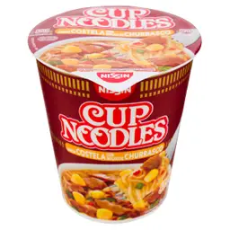

Cup Noodles

Easy and fast!
If you're out of time and need to eat something, just buy one of these cup noodles.
Ingredients
Steps
- Boil water.
- Open half of the cup noodle lid and put the water to the mark inside and close again.
- Wait for approximately 3 minutes.
- Profit.